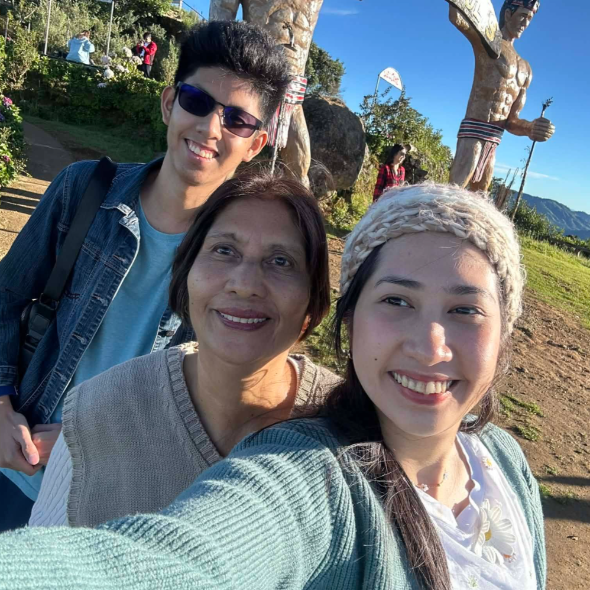
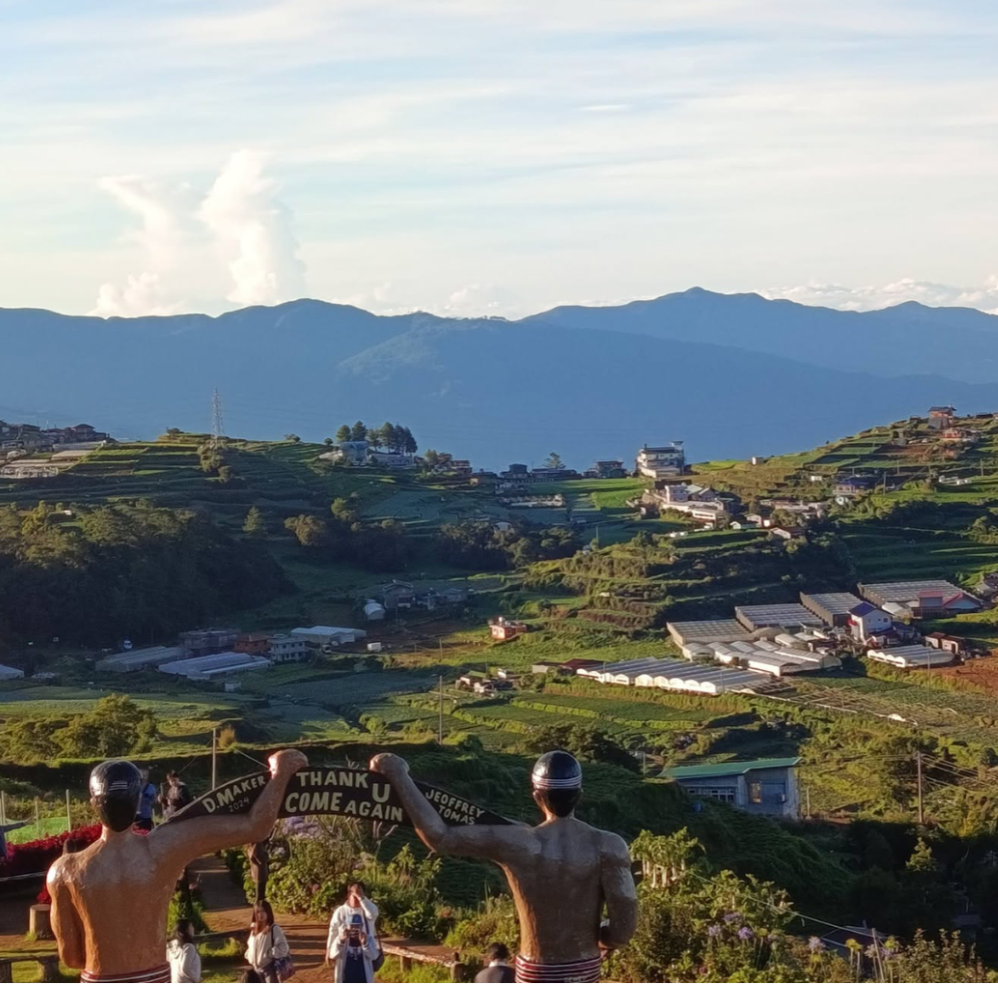

My Favorite Place: Mt. Olis in Atok, Benguet
Mt. Olis is probably one of, if not, the most beautiful places I've ever seen in my life so far.
We had to get a personal tour guide to get us from Baguio to Benguet at 4 in the morning.
It was tiring, but it was all worth it when the sun started shining at the mountainside where we drove on.
When we got to Mt. Olis itself, we were at awe the view! There were plenty of plants and flowers everywhere.
All of which were arranged so beautifully with so many varieties. This place really is so photogenic it got me taking photos of my own.
I'm not even fond of taking photos of my own, but when I got there, it was hard not to.
I haven't even gotten to the actual scenery across the top of the mountain!
And my goodness if it wasn't one of the greatest views I've seen... Photos online could not do the view itself justice.
You simply had to be there to see it in all its glory. The cascading rice terraces you can see below as farmers work on them was pristine.
The sun hitting the overlapping mountain ranges as the cool air coalesces onto our skin took our breath away.
There were simply so many stops, platforms, and paths you can take that gives you different perspectives of the peak!
It was an honor to have spent my first time in Mt. Olis with my relatives and witness the beauty of creation on our country.



Want to know more about Mt. Olis? Visit this travel website!